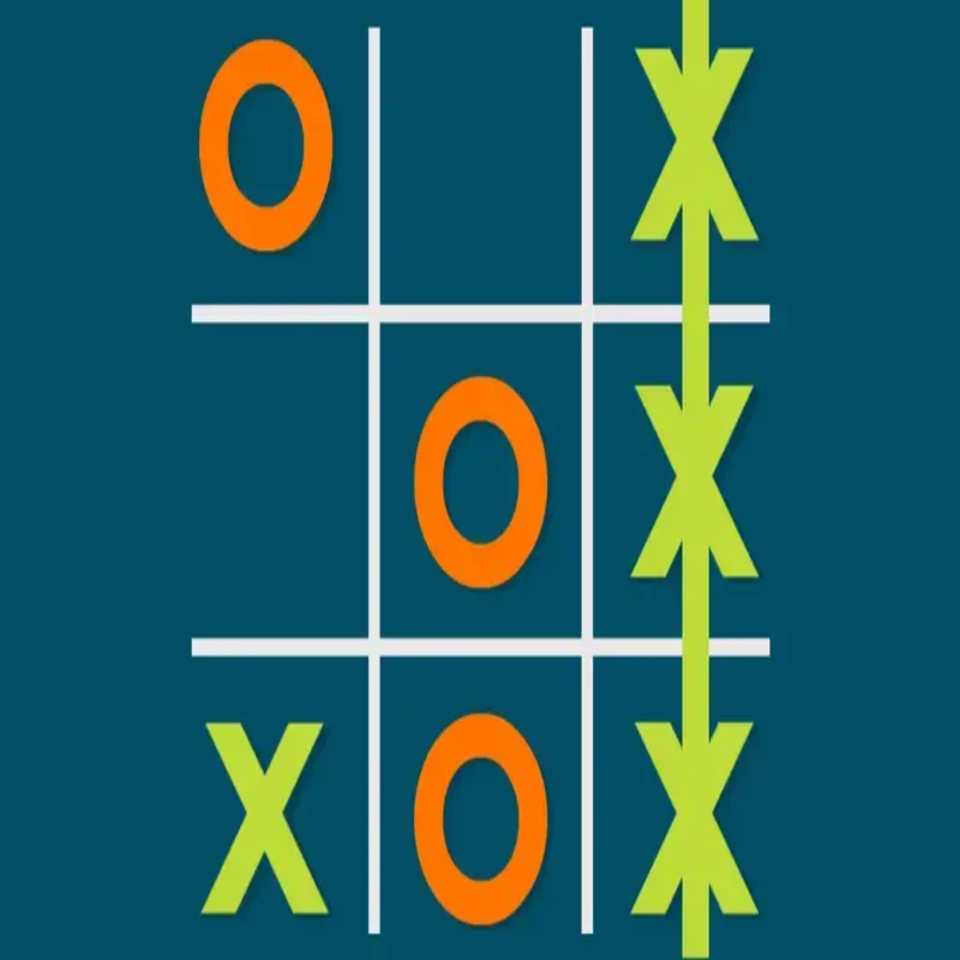

Projects
Doctor Appointment System
A web-based system that allows patients to book doctor appointments, view doctor profiles, and access blood bank information easily.
Library Management System
Web-based system to manage books, members, borrowing, returns, fines and generate reports — built with clean Django architecture.
Projects
Bank Note Authentication
A machine learning and AI-based application that verifies banknote authenticity using image analysis and feature extraction to identify fake currency.
Tic Tac Toe

A simple interactive Tic Tac Toe game that allows two players to play turn-by-turn with automatic win, draw detection, and game reset functionality.
Publications
Chronic Kidney Disease Detection
Detecting Chronic Kidney Disease (CKD) at the Initial Stage using a Hybrid Feature Selection Method and Robust Data Preparation Pipeline.